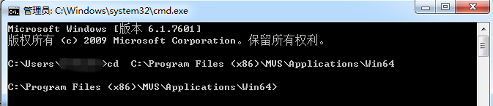

客户端支持通过CMD命令的方式打开客户端并连接相机。
-
通过系统菜单打开CMD命令框。
-
在命令框中输入cd+MVS.exe所在路径，并回车。
若MVS.exe所在路径为“C:\Program Files
(x86)\MVS\Applications\Win64”，则输入内容为cd C:\Program Files
(x86)\MVS\Applications\Win64，如下图所示。

图 1 通过CMD连接客户端
-
通过CMD连接相机有四种方式。
-
通过相机IP地址连接：输入MVS.exe/IP xx.xx.xx.xx，如下图所示。
-
通过相机MAC地址连接：输入MVS.exe/Mac
xx.xx.xx.xx.xx.xx。
-
通过相机序列号连接：输入MVS.exe/SN xxxxxxxx。
-
通过客户端的mcfg文件打开：输入MVS.exe/mcfg+mcfg文件所在路径+mcfg文件名称.mcfg。
说明：
通过相机IP地址和MAC地址连接的方式只适用于网口相机，不支持U3V相机和Camera Link相机。
-
回车。
通过以上操作，可打开客户端软件同时连接指定的相机。